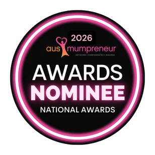
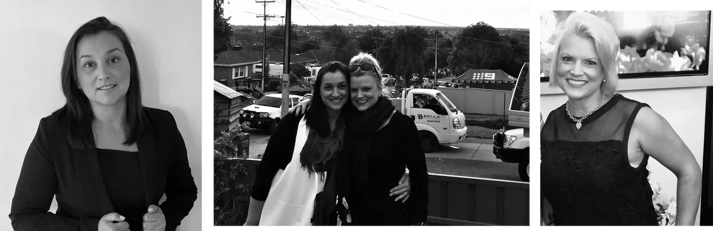

More channels. More data. Less clarity.
Activity can multiply while direction disappears. KRM starts by listening deeply, understanding the business challenge and separating urgent motion from meaningful progress.
Marketing strategy + planning for ambitious Australian businesses
Illustrative example — indicative channel figures used to show how KRM presents a media mix, not results from a specific client.
Illustrative media mix
A worked example of the same channels read four ways as the story progresses. Indicative figures only.
| Channel | Share of optimised spend | Share of measured growth |
|---|
Activity can multiply while direction disappears. KRM starts by listening deeply, understanding the business challenge and separating urgent motion from meaningful progress.
Research, audience insight and commercial context reveal the opportunities worth pursuing — and the distractions that are safe to leave behind.
KRM connects marketing decisions to business goals, creating focused priorities across brand, media, creative and the customer journey.
A practical plan gives teams ownership, timing and measures that matter — so good strategy becomes consistent action and measurable momentum.
How KRM helps
KRM can become your marketing team or strengthen the one you already have, shaping an engagement around the outcome your business needs.
Experience with substance
Kathy Miglis and Rebecca Moriarty combine complementary careers in media, marketing, leadership and business advisory.

Recognised as a 2026 AusMumpreneur Awards nominee.
Years of experience each across marketing, media and business.
A shared background working together at one of Australia’s largest media companies.
Media i State and National Team of the Year — All Media.
Marketing, media and business priorities aligned around the outcome.
Career experience, carefully framed. Across their careers, Kathy and Rebecca have worked in senior roles and on campaigns spanning media, government, banking, telecommunications, retail, tourism, sport and the not-for-profit sector. This describes their professional experience, not a KRM client list.
How client proof could feel
This preview demonstrates a future home for genuine KRM client stories. The examples below are clearly attributed placeholders and will be removed before launch.
Demonstration content — external Google customer story, not a KRM testimonial.
Demonstration content — external Google customer story, not a KRM testimonial.
The people behind KRM
Kathy and Rebecca first worked together at Channel 9. Their complementary strengths now give KRM clients one joined-up view across marketing, media and business.

Marketing strategy + integrated campaigns
Kathy brings more than two decades across media, local government, events and retail marketing. She turns research and business context into integrated strategies, then manages the detail needed to deliver.
Business advisory + media intelligence
Rebecca brings more than 20 years in national media and business, including roles at Channel 9, CBA and Singtel Optus. She aligns objectives, evidence and negotiation to help organisations scale with confidence.
Start with the challenge
Bring KRM the complicated version. We will listen, find the signal and help shape the next practical move.